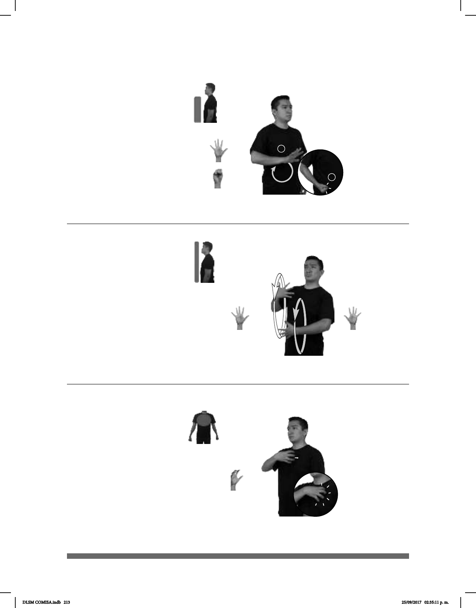

213
Seña: SM
Seña que pasa de 5.1
a S.1
La palma inicia hacia
abajo y termina hacia arriba.
A la altura de la cadera.
La mano golpea la
cadera mientras el antebrazo gira y
cambia su orientación.
País ubicado en el sudeste
de Asia cuya capital es Nom Pen.
Seña: SS
5.1
Palmas hacia adentro.
A la altura del pecho.
Las manos se mueven
formando círculos hacia el frente
alternadamente.
Cabaeza ladeada,
ceño fruncido, labios protruidos.
1. sust. m. Estado en el que
se ha roto el equilibrio y el orden. 2. v. tr.
Buscar una reacción de enojo en alguien
irritándolo o estimulándolo con palabras u
obras.
1
2
Caos
1
/ Provocar
2
(5-G 62)
(5-G 61)
________________neg_ _________o.i.g_
CAMBOYA pro-YO NO CONOCER, TÚ CONOCER
Yo no conozco Camboya, ¿y tú?
AYER NOCHE
allá
METRO CAOS
Anoche el metro era un caos.
Seña: SM
5.16
Palma hacia adentro.
Sobre el pecho del lado
izquierdo.
1. sust. m. Persona que tiene
bajo su mando y responsabilidad un
grupo. 2. sust. m. Persona que dirige una
nave. 3. sust. m. Grado de la jerarquía
militar que está por encima del teniente y
por debajo del mayor. 4. sust. m. Grado
militar de la marina que está por encima
del teniente y por debajo del comandante.
(5-G 63)
________muy_
BARCO CAPITÁN pro-él INTELIGENTE
El capitán del barco es muy inteligente.
DLSM COMISA.indb 213 25/09/2017 02:35:11 p. m.